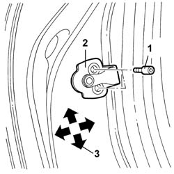

7010A10 Rear side DOOR - Adjustment of striker and adjustment of seal if necessary
- Path
- Procedures > 70 FITTINGS > 7010 passenger compartment rear side doors > 7010A REAR SIDE DOORS ASSEMBLY > 7010A10 Rear side DOOR - Adjustment of striker and adjustment of seal if necessary
- Kind
- repair procedure (removal / refitting; the operation number is the code)
- Applies to
- all engines; all production periods
- Interactive page
- https://sloeber94.github.io/elrnDB-lThss/en/#/79994
Applies to: all engines; all production periods
1. Loosen the bolts fixing the striker.
2. Move the striker into the correct position, using the slotted openings in the actual striker.
3. The arrows show the possible movements for the adjustment.

Applies to: all engines; all production periods
- When the adjustment has been completed, tighten the bolts fixing the lock striker to torque.
 | Value - daNm | Fastening | Component | Ø |
|---|---|---|---|---|
. | 2.4 | Bolt | REAR DOOR STRIKER | M8 |